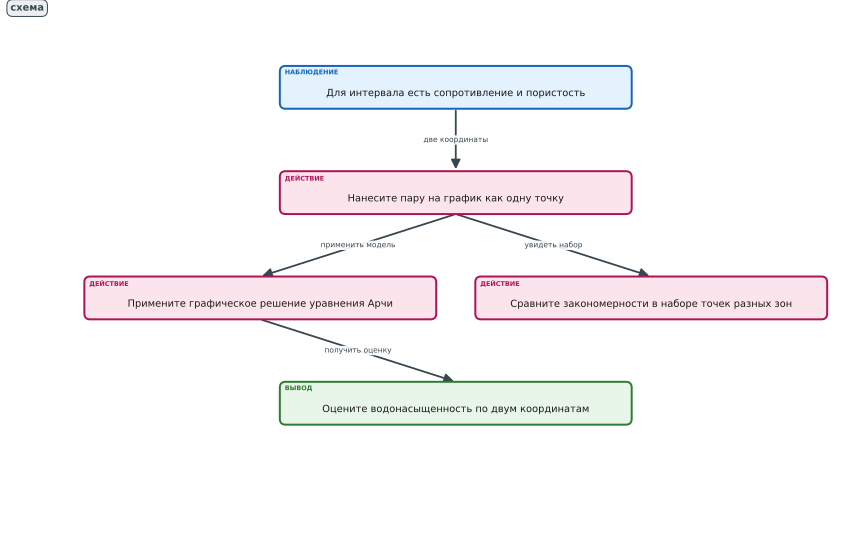

Две кривые можно совместить на одном графике, чтобы оценить водонасыщенность, долю воды в порах.
График помогает сравнить перспективные интервалы без длинных вычислений.
Пороговая идея. Водонасыщенность получают не из одного показания прибора, а из положения точек на диаграмме. модель
Интерактив: как это происходит

1 / 3
Зачем открывать график, если по каждому интервалу уже есть цифровые данные?
Допущения: Схема показывает способ чтения, не имитируя измерения отсутствующих интервалов..
Как это работает
Две координаты
На диаграмме насыщения сопоставляют удельное сопротивление и пористость, долю объёма пор. Диаграмма похожа на график пористости, но по обеим координатам здесь находят водонасыщенность. Диаграммы Пикетта и Хингла дают графическое решение уравнения Арчи, которое связывает эти величины. стр. 132
«Saturation crossplots, also called resistivity-porosity crossplots (or specifically, Pickett plots and Hingle plots) are similar to the porosity crossplots discussed in Chapter 4.»
«They are x-y plots of log data from which quantities of interest are derived; in this case, that quantity is water saturation ($S_w$).»
«Both the Pickett and Hingle methods are essentially graphical solutions to the Archie saturation equation.»
схема
Две координаты позволяют оценить водонасыщенность. Схема не показывает конкретных измерений.
Класс B · схема · нарисовано кодом · стр. 132
Зачем график сохранился
Такие графики появились до компьютерной интерпретации каротажа, измерений вдоль скважины. Они сокращали вычисления и облегчали сравнение потенциально продуктивных зон, где ожидают приток. Ранние программы обычно не строили графиков, и этим приёмом пользовались реже. стр. 132
«They were created before the use of computers to aid log interpretation.»
«These techniques minimize the number of calculations that must be done and aid the comparison of potentially productive zones.»
«With the advent of early (mostly nongraphic) log-interpretation software, their use declined,»
Что даёт взгляд на данные
К графикам вернулись, поскольку специалист замечает на них закономерности. Авторы считают графики необходимой частью полнофункциональной компьютерной интерпретации каротажа. стр. 132
«but this decline was reversed as people realized the power of the techniques to use the ability of the human mind to recognize patterns in data.»
«These techniques are currently regarded as necessary components of full-functioned computer-based log-interpretation systems.»
Что это значит для данных по книге
Значение имеет геометрия набора парных наблюдений, а не только автоматический расчёт.
Вход
Каротажные данные сопротивления и пористости.
Выход
Оценка водонасыщенности и наглядное сравнение зон.
Где ломается
Вывод зависит от интерпретации рисунка точек.
Где здесь ручной труд специалиста
Входные данные
Согласованные по глубине ряды каротажа.
Ручные шаги
Построить диаграмму и сравнить зоны по рисунку точек.
Точки суждения
Распознать закономерность и её геологический смысл.
Время
Авторы отмечают сокращение вычислений, но не приводят длительность.
Типичные ошибки
Подменить распознавание на диаграмме просмотром несвязанных рядов.
Аналогия модель
У диаграммы рассеяния роль интерактивной проверки результатов модели.
Где аналогия перестаёт работать: В этом случае координаты связаны физической моделью, и график сам по себе не доказывает продуктивность.
Как это делается сейчас модель
Графики строят средствами интерпретации данных; визуальную проверку структуры точек совмещают с расчётом.
Новые понятия
Пористость (porosity)
Доля общего объёма породы, занятая порами. модель
Водонасыщенность (water saturation)
Доля объёма пор, заполненная водой. модель
Истинное сопротивление пласта (true resistivity)
Сопротивление самого пласта, обозначение R_t. модель
Уравнение Арчи (Archie equation)
Связь сопротивления пласта с его пористостью, водонасыщенностью и электрическими параметрами. модель
Каротаж (well logging)
Скважинные измерения, которые записывают как кривые по глубине. модель
Кроссплот (crossplot)
Диаграмма, на которой по двум координатам каротажных данных находят интересующую величину. стр. 132
Диаграмма Пикетта (Pickett plot)
Диаграмма сопротивления и пористости, графически решающая уравнение Арчи. стр. 132
Диаграмма Хингла (Hingle plot)
Графическое решение уравнения Арчи по диаграмме сопротивления и пористости. стр. 132
Диаграмма сопротивления и пористости (resistivity–porosity crossplot)
Диаграмма, по которой графически определяют водонасыщенность из каротажных данных. стр. 132
Все утверждения шага с дословной цитатой автора и страницей книги (по PDF).
Диаграммы водонасыщенности называют диаграммами сопротивления и пористости; они похожи на рассмотренные ранее диаграммы пористости. наблюдение
«Saturation crossplots, also called resistivity-porosity crossplots (or specifically, Pickett plots and Hingle plots) are similar to the porosity crossplots discussed in Chapter 4.»
По двум координатам каротажных данных на графике определяют водонасыщенность. наблюдение
«They are x-y plots of log data from which quantities of interest are derived; in this case, that quantity is water saturation ($S_w$).»
Диаграммы Пикетта и Хингла дают графическое решение уравнения Арчи. наблюдение
«Both the Pickett and Hingle methods are essentially graphical solutions to the Archie saturation equation.»
Эти методы созданы до применения компьютеров в интерпретации каротажа. наблюдение
«They were created before the use of computers to aid log interpretation.»
Методы сокращают вычисления и облегчают сравнение потенциально продуктивных зон. наблюдение
«These techniques minimize the number of calculations that must be done and aid the comparison of potentially productive zones.»
Применение графиков снизилось с появлением ранних, преимущественно неграфических программ интерпретации. наблюдение
«With the advent of early (mostly nongraphic) log-interpretation software, their use declined,»
Применение возобновилось, когда специалисты оценили пользу человеческого распознавания закономерностей в данных. наблюдение
«but this decline was reversed as people realized the power of the techniques to use the ability of the human mind to recognize patterns in data.»
Авторы считают графики необходимой частью полнофункциональной компьютерной интерпретации каротажа. наблюдение
«These techniques are currently regarded as necessary components of full-functioned computer-based log-interpretation systems.»
Исходный текст урока
Стр. 132 · SATURATION CROSSPLOTS
Saturation crossplots, also called resistivity-porosity crossplots (or specifically, Pickett plots and Hingle plots) are similar to the porosity crossplots discussed in Chapter 4. They are x-y plots of log data from which quantities of interest are derived; in this case, that quantity is water saturation ($S_w$). Both the Pickett and Hingle methods are essentially graphical solutions to the Archie saturation equation. They were created before the use of computers to aid log interpretation. These techniques minimize the number of calculations that must be done and aid the comparison of potentially productive zones. With the advent of early (mostly nongraphic) log-interpretation software, their use declined, but this decline was reversed as people realized the power of the techniques to use the ability of the human mind to recognize patterns in data. These techniques are currently regarded as necessary components of full-functioned